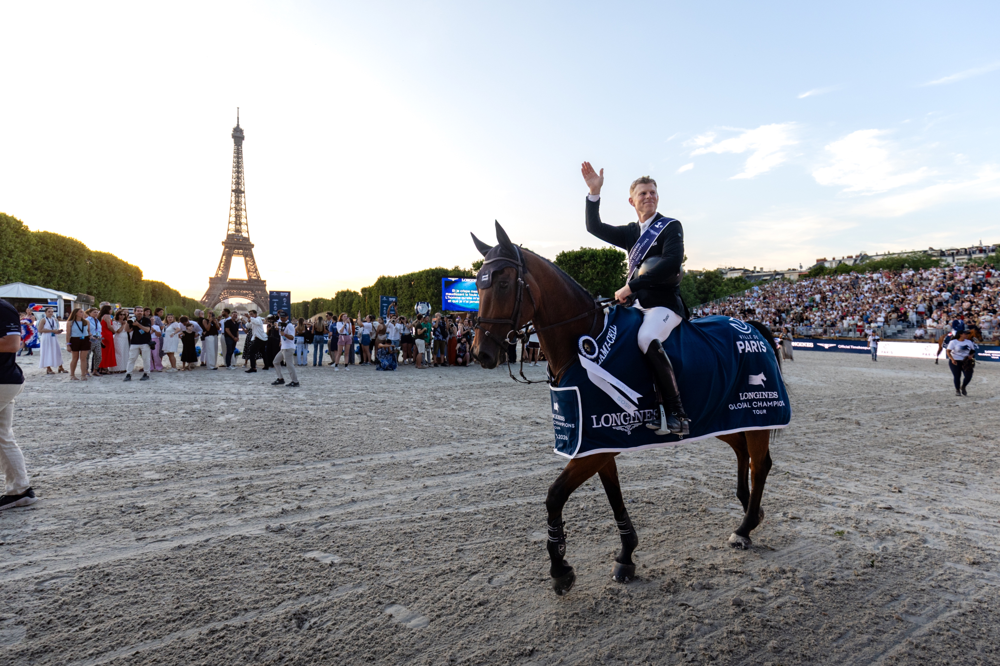

Max Kühner conquista el Gran Premio del LGCT de París con EIC Up Too Jacco Blue
El jinete austriaco Max Kühner firmó la victoria en el Gran Premio del Longines Global Champions Tour de París con EIC Up Too Jacco Blue tras imponerse en un desempate a tres en la pista instalada al pie de la Torre Eiffel. El binomio paró el cronómetro en 38,36 segundos y sin penalización, una marca que ni Denis…

Longines Global Champions Tour
El jinete austriaco Max Kühner firmó la victoria en el Gran Premio del Longines Global Champions Tour de París con EIC Up Too Jacco Blue tras imponerse en un desempate a tres en la pista instalada al pie de la Torre Eiffel. El binomio paró el cronómetro en 38,36 segundos y sin penalización, una marca que ni Denis Lynch ni Olivier Perreau consiguieron rebajar en la manga final.
El segundo escalón del podio fue para el irlandés Denis Lynch, que cerró su recorrido con Cordial a cero y en 39,89 segundos, apenas un segundo y medio por encima del ganador. La tercera plaza viajó al equipo local de la mano de Olivier Perreau, que con GL Events Dorai d'Aiguilly firmó otro doble cero impecable y detuvo el reloj en 39,99 segundos, en una llegada muy ajustada con el irlandés.
El recorrido base —1,60 m, baremo A contra el cronómetro con desempate inmediato— dejó a tres binomios sin falta de un pelotón internacional de máximo nivel. La decisión, por tanto, se trasladó íntegramente al cronómetro del jump-off, donde Kühner asumió riesgo en los giros interiores y construyó una ventaja superior al segundo y medio que resultó definitiva.
La victoria refuerza la temporada de Kühner en el circuito LGCT y consolida a EIC Up Too Jacco Blue como uno de los caballos más fiables del austriaco en gran premio CSI5*. París, una de las paradas más icónicas del Tour por su pista urbana en el Campo de Marte, vuelve a ser escenario de un Gran Premio decidido por décimas, fiel a la tradición de la cita parisina.
— Redacción de Hípica al Día